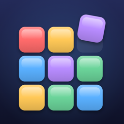

Irodori
Support
Thank you for playing Irodori! For questions, bug reports, or ideas, please open an issue here:
github.com/zawan-dev/irodori-support/issues
FAQ
How does scoring work?
Each block placed is 1 point. Each cleared line is worth 10 points — ×4 if the whole line is one color (Mono), ×2 if it contains all five colors (Rainbow). Clearing several lines at once and keeping a combo going multiplies your points. Clearing the whole board gives +300.
What is the Daily puzzle?
Every day everyone gets the same starting board and the same 30 pieces. Only your first attempt counts. A new puzzle starts at midnight in your time zone.
Where is my data stored?
Only on your device. Irodori has no ads, no accounts and no tracking.
サポート
Irodori をプレイしていただきありがとうございます。ご質問・不具合報告・ご要望は、上記の GitHub Issues からお寄せください。
よくある質問
得点の仕組みは?
ブロックを置くと1マス1点。1ラインを消すと10点で、1色でそろえると×4(単色)、5色すべてが入ると×2(虹色)。同時消しとコンボでさらに倍率が上がります。盤面をすべて消すと+300点。
デイリーとは?
毎日、全員が同じ盤面・同じ30ピースに挑戦します。記録されるのは最初の1回のみ。端末のタイムゾーンで0時に新しいパズルになります。
データはどこに保存されますか?
お使いの端末の中だけです。広告・アカウント・トラッキングは一切ありません。